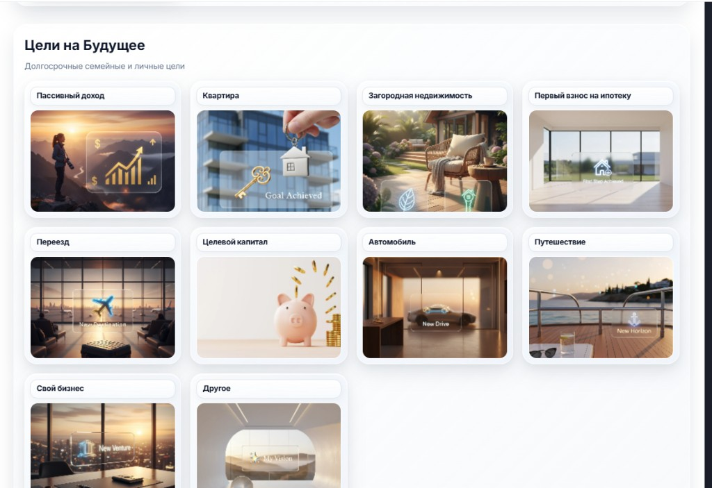
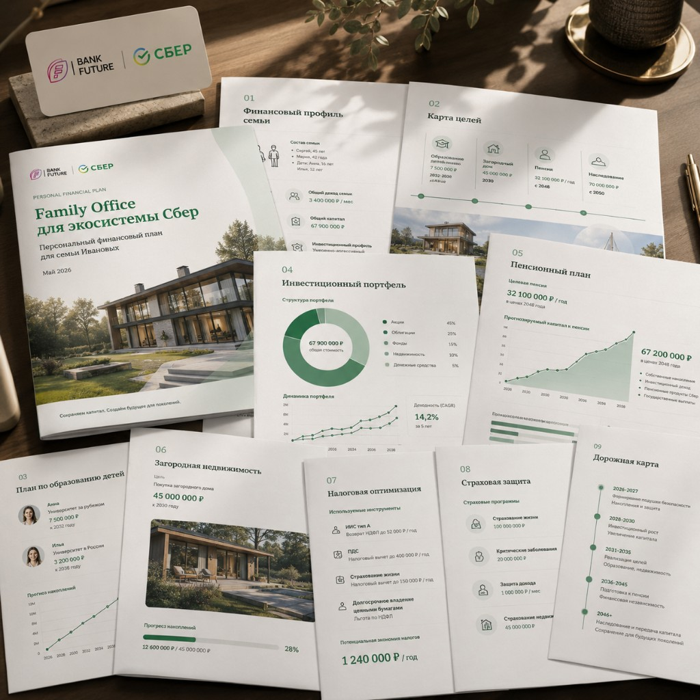

О нашем сервисе
BankFuture PFP — платформа финансового планирования: агент или клиент собирает цели, система считает портфель, формирует PDF/HTML-отчёт с переходами на продукты партнёра.

CRM и клиенты
Карточка клиента, цели, история, статусы, приглашения

Конструктор целей
Расчёт целей, риск-профиль, smart allocation, сценарии

Отчёты
PDF/HTML Finam v2, дисклеймеры, CTA с атрибуцией
- Детерминированные расчёты — не «угадайка» LLM
- Опционально: ИИ-ассистент и GigaChat для пояснений